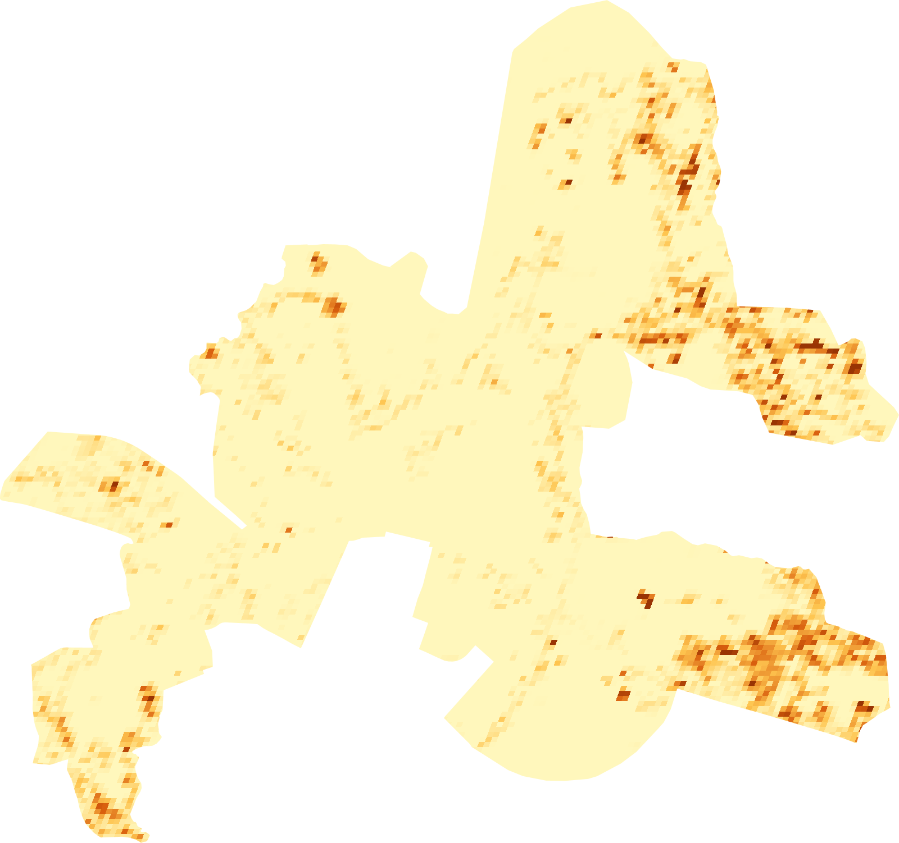

About this analysis
Assignment: Map the spatial expansion of built-up surface relative to the 2005 footprint.
This portfolio presents the Question 2 GHSL built-up-surface analysis for the Jaipur Urban Local Body using four five-year epochs: 2005, 2010, 2015 and 2020.
Download notebook (.ipynb)1. Interactive time-slider map
Use the time slider to compare the GHSL built-up surface across the 2005, 2010, 2015 and 2020 epochs.
2. Temporal animation

3. Built-up surface maps by epoch
4. Positive expansion relative to 2005
Each map shows only positive pixel-level change in GHSL built-up surface relative to the 2005 baseline; zero and negative differences are set to zero.


5. Dedicated positive-expansion map
Question 2 focus: This map isolates the locations where mapped built-up surface increased between the 2005 baseline and 2020. Only positive differences are retained; cells with zero or negative change are shown as no expansion.
Interactive positive-expansion map
Use the interactive map below to pan, zoom, inspect the layer, and view the spatial pattern of positive expansion.
Open interactive positive-expansion map in a new tab ↗
6. Numerical summary
Total built-up surface and net change from 2005
Built-up surface is summed from the GHSL built_surface band within the Jaipur ULB. “km²-equivalent” is the summed square-metre measurement divided by 1,000,000.
| Epoch | Total built-up surface (m²) | Total (km²-equivalent) | Net change from 2005 (m²) | Net change from 2005 (%) |
|---|---|---|---|---|
| 2005 | 24,595,251.11 | 24.60 | 0.00 | 0.00 |
| 2010 | 25,687,886.75 | 25.69 | 1,092,635.64 | 4.44 |
| 2015 | 26,784,586.17 | 26.78 | 2,189,335.06 | 8.90 |
| 2020 | 27,496,199.93 | 27.50 | 2,900,948.82 | 11.79 |
Positive built-up increase relative to 2005
Positive increase is the sum of per-cell increases after negative differences are set to zero. In the notebook’s returned results, the summed decrease is 0 m² for each comparison, so positive increase equals net change.
| Comparison | Positive increase (m²) | Positive increase (ha) | Decrease (m²) | Net change (m²) |
|---|---|---|---|---|
| 2010 − 2005 | 1,092,635.64 | 109.26 | 0.00 | 1,092,635.64 |
| 2015 − 2005 | 2,189,335.06 | 218.93 | 0.00 | 2,189,335.06 |
| 2020 − 2005 | 2,900,948.82 | 290.09 | 0.00 | 2,900,948.82 |
Source: the saved total_stats results in this notebook.
Download the original chart (PNG)

7. Formulas and numerical calculations
The following equations show exactly how the numerical results in this analysis are calculated from the GHSL built_surface values.
7.1 Convert built-up surface from m² to km²-equivalent
Why 1,000,000? 1 km = 1,000 m, therefore 1 km² = 1,000 × 1,000 = 1,000,000 m².
B2005 = 24,595,251.11 m²
24,595,251.11 ÷ 1,000,000 = 24.60 km²-equivalent
7.2 Absolute change from 2005 to 2020
27.50 − 24.60 ≈ 2.90 km²-equivalent
Using the unrounded notebook values:
27,496,199.93 − 24,595,251.11 = 2,900,948.82 m²
7.3 Percentage change relative to the 2005 baseline
2,900,948.8224,595,251.11 × 100 = 11.79%
7.4 Net spatial change per 100 m grid cell
Here i represents an individual 100 m × 100 m GHSL grid cell. A positive value means mapped built-up surface increased in that cell; a negative value means it decreased.
7.5 Positive expansion only
This keeps only positive changes and sets negative changes to zero.
Δi = 7,000 − 4,000 = +3,000 m²
Therefore Ei = 3,000 m².
Δi = 5,000 − 7,000 = −2,000 m²
Therefore Ei = max(−2,000, 0) = 0 m².
8. Methodology
This study uses the Global Human Settlement Layer (GHSL) built-up surface product accessed in Google Earth Engine through JRC/GHSL/P2023A/GHS_BUILT_S. The built_surface band represents square metres of built-up surface per 100 m grid cell. The 2005, 2010, 2015 and 2020 epoch images were clipped to the JAIPUR Urban Local Body selected from the SBM_ULBs dataset in the Indian administrative-boundaries urban release.
The same boundary, band, nominal scale and visualization range were used for all epochs. No seasonal-window or cloud-quality filter was required because the assigned GHSL product is an epoch-based built-surface dataset rather than a cloud-prone monthly optical/Sentinel series. An interactive time slider and labelled GIF show the four available epochs. Net change was calculated as 2020 minus 2005, and positive expansion was isolated by setting negative differences to zero. Total mapped built-up surface was estimated by summing built_surface within the Jaipur boundary for each epoch.
9. Results and discussion
Results
- 2005: 24.60 km²-equivalent of mapped built-up surface.
- 2010: 25.69 km²-equivalent (+4.44% relative to 2005).
- 2015: 26.78 km²-equivalent (+8.90% relative to 2005).
- 2020: 27.50 km²-equivalent (+11.79% relative to 2005).
- 2005–2020 absolute increase: 2.90 km²-equivalent.
Discussion
The GHSL results show a clear overall increase in mapped built-up surface within the Jaipur ULB between 2005 and 2020. The summed built-up surface rose from approximately 24.60 km²-equivalent in 2005 to 27.50 km²-equivalent in 2020, an increase of approximately 2.90 km²-equivalent, or 11.79%. The intermediate epochs also show continued growth, reaching 25.69 km²-equivalent in 2010 and 26.78 km²-equivalent in 2015. Thus, the temporal pattern is an overall increase across all four available epochs rather than a single end-period jump.
The positive-expansion map identifies the locations where mapped built-up surface increased relative to the 2005 baseline. The strongest spatial clusters should be described from the rendered map itself. Directional claims such as northern, southern, eastern or western expansion should only be made when clearly supported by the map. The time slider and GIF provide a visual way to examine how the mapped built-up pattern evolves between the four five-year epochs.
10. Limitations
- Temporal resolution: GHSL provides five-year epochs in this analysis, so the result is not an annual time series and exact construction dates cannot be inferred.
- Spatial resolution: the product uses a 100 m grid; small or fragmented developments may not be represented at building scale.
- Measurement meaning:
built_surfaceis built-up surface within grid cells, not a vector inventory of individual building footprints. - Boundary dependence: all statistics depend on the selected Jaipur ULB boundary; a district, ward, or different municipal boundary would produce different totals.
- Uncertainty: observed differences can include dataset estimation/classification uncertainty as well as genuine land-development change.
- Change interpretation: a positive difference between compared epochs indicates increased mapped built-up surface, but the difference map alone does not establish the exact date, cause, or type of development.
11. Data acknowledgement
Global Human Settlement Layer (GHSL), European Commission Joint Research Centre, GHS-BUILT-S R2023A. Jaipur ULB boundary: SBM_ULBs from ramSeraph/indian_admin_boundaries, urban release.